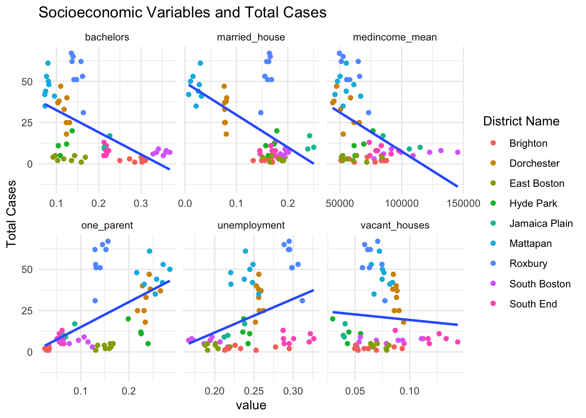

Analysis
Here we provide a detailed analysis using more sophisticated statistics techniques.

Introduction
Urban violence remains a pervasive challenge that affects cities worldwide. In Boston, variations in violent crime rates across different neighborhoods suggest a complex interplay of socioeconomic factors. This study aims to dissect the relationship between socioeconomic status—measured through variables such as income, employment, and education—and the frequency of gun violence within Boston’s diverse districts. By exploring these relationships, the study seeks to identify potential mechanisms for policy action that could mitigate violence and enhance urban safety.
Our analysis revolves around several pivotal questions: Does higher income correlate with lower incidences of gun violence? What role does employment stability play in mitigating urban violence? How does educational attainment influence these dynamics? We hypothesized that higher socioeconomic status, indicated by increased income levels, stable employment, and higher educational attainment, is associated with reduced instances of gun violence. To test these hypotheses, we employ statistical models, including linear and logistic regressions, to examine these relationships, focusing on extracting meaningful patterns from a decade of data. This approach allows us to assess the strength and significance of these socioeconomic factors in relation to urban violence, providing a data-driven basis for recommendations and policy considerations.
Analysis
analysis summary: focus on R-squared/adjusted R-squared, our models capture a majority of the variance in our dependent variable, total cases. Therefore, our choice of variables are good indicators and have substantial predictive power for the number of incidents in a given district. #Outline: #summary statistics: correlations of our independent variables with total cases, correlation table seems intuitive, for example as unemployment increases, total cases also increase. Show the distribution of our variables, include more creative plots for appeal, reference tidycensus,Rfor data science books.
#Modeling: good R-Squared, above 90 for adjusted R-squared which is key, look at the relationship across spatial, socio economic, and racial features, geospatial analysis to weight the proximity of our locations, plot Beta, where is our regressors more impactful?, compare to segregation index and map.


Limitations
The analysis conducted in this study faces several potential issues related to the data that could impact the validity and reliability of the findings. Among these is the inconsistency in reporting across different districts, which may arise from variations in how incidents are classified or documented by different officers, leading to differences in data quality. Moreover, the dataset excludes justifiable and self-inflicted shootings, potentially skewing the comprehensive understanding of the city’s gun violence.
Additional challenges include potential biases in how incidents are reported. Systemic biases within law enforcement practices could influence reporting rates. For example, certain neighborhoods may experience underreporting due to strained community-police relations or resource constraints. Furthermore, differing enforcement practices could lead to an overrepresentation of certain demographics as victims, introducing biases that may distort the perceived demographic patterns of gun violence.
These factors call for a cautious interpretation of the study’s results and point to the need for further research. Incorporating variables such as police presence, public health initiatives, and community programs, could provide a fuller picture of the factors influencing urban violence. Moreover, while this study identifies correlations between socioeconomic status and gun violence, establishing causation requires additional longitudinal and experimental research to explore the underlying mechanisms more definitively.